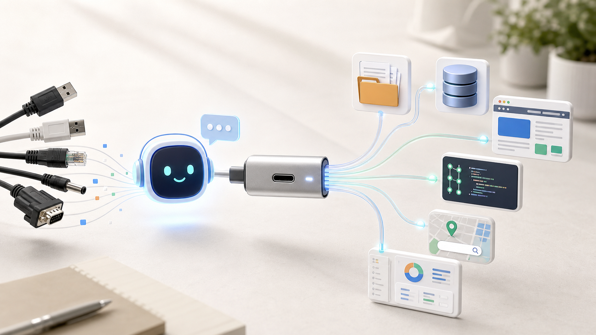
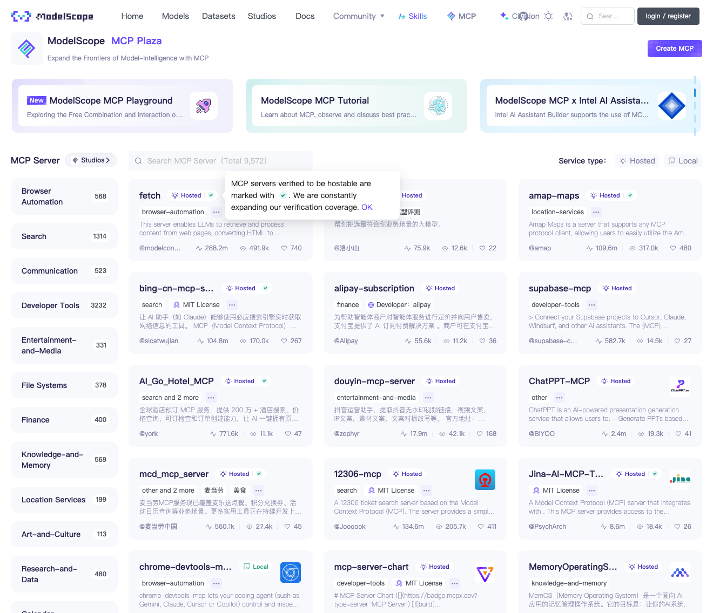

MCP：就是我们日常使用的 Type-C 接口
从概念到实操，手把手带你接上第一个 MCP 工具
技趣星球 · 用技术创造乐趣。

你有没有遇到过这种尴尬——
想让 AI 帮你读个本地文件？不行。 想让 AI 查一下你的数据库？也不行。 想让 AI 直接翻翻 GitHub 上的代码？还是不行。
每次只能复制粘贴，贴到一半上下文满了，再删了重来。
我第一次真正觉得 MCP 有用，是在做页面开发的时候。
以前拿到 Figma 设计稿，流程大概是这样：
打开设计稿
→ 截图
→ 手动看字号、间距、颜色
→ 把页面结构描述给 AI
→ AI 写代码
→ 你再一点点对齐接上 Figma MCP 之后，感觉就不一样了。
AI 可以读取设计稿里的页面结构、图层信息、颜色和尺寸，再结合项目代码，辅助你生成页面代码。
你不再是在给 AI 口述设计稿。
你是在把设计稿这根“线”，直接插进 AI 的工具箱里。
类似的场景还有很多：
比如你现在在 ModelScope 上看到的 douyin-mcp-server，就属于内容平台相关的 MCP 工具。

你可以把它理解成：
让 AI 打开一个你有权访问的内容页面，
帮你截图、读取页面信息，
再把标题、作者、发布时间、页面结构、文案重点整理出来。它适合被理解成“帮 AI 看懂页面和整理信息”的工具。
不是“帮你搬运别人内容”的工具。
但这里要先说清楚：
能截图，不代表能随便搬运；能读取，不代表能绕过平台规则。
特别是抖音、小红书、B 站这类内容平台，涉及作者版权、肖像、评论隐私、平台服务条款。
你可以用它做个人学习、页面理解、自己账号内容归档、发布前检查。
不要用它批量抓取、搬运别人的内容、绕过登录限制，或者把别人视频/图片二次发布成自己的素材。
这就是为什么最近 Cursor、Claude Desktop、VS Code、Cherry Studio 全都在讲一个词：MCP。
别被名字吓到。一句话：MCP 就是 AI 调用外部工具的「Type-C 接口」。以前每个工具都要单独接线，有了它，一套接口全搞定。
上手难度：⭐⭐⭐ 只用现成 MCP 服务，难度不高；自己写 MCP Server，需要一点编程基础。
1. MCP 是什么：一个比喻讲清楚
AI 很聪明，会思考、会写字、会拆任务。
但如果没有手和脚，它就只能在你跟它聊天那个框里打转。
比如你想让 AI：读文件、查数据库、搜网页、操作浏览器、访问 GitHub……
光靠聊天窗口是不行的。
以前的解决办法是：每个工具单独给 AI 接一根线。
这就好比你家里以前那堆数据线——老安卓一根、相机一根、MP3 一根、硬盘又是一根。每次出门都在纠结"这根到底是干嘛的"。
后来 Type-C 出来了。不是说所有设备内部都一样，而是大家尽量用同一种接口连接。出门只带一根线，省心。
MCP 就是这个思路在 AI 世界里的翻版。
全名 Model Context Protocol（模型上下文协议），说白了就干一件事：规定 AI 客户端和外部工具之间怎么"说话"。
数据流长这样：
AI 客户端 → MCP Server → 文件 / 数据库 / 浏览器 / 搜索 / 内部系统三个角色，其实就对应一句话：
不用背术语。记住这句就够了：
MCP Server 把工具能力递给 AI，AI 客户端接进来用。
接下来，咱们从普通人视角讲到开发者视角，没写过代码的能看懂大概，写代码的能看懂数据怎么流。
2. MCP 怎么来的：从复制粘贴到统一接口
MCP 不是某个天才一拍脑袋想出来的。
它是 AI 从「会聊天」走向「会干活」的过程中，自然长出来的。
2.1 早期：AI 主要靠复制粘贴
最早大家用 ChatGPT、Claude 这类工具，主要是问答。
你要分析一个文件，就把文件内容复制进去。
你要让 AI 看一段代码，就把代码贴进去。
你要让 AI 查资料，就把搜索结果粘进去。
这当然能用，但很累。
问题也明显：
上下文太长，容易超限
复制粘贴容易漏内容
AI 不知道文件后续有没有变化
AI 不能直接执行工具所以大家开始想：
能不能让 AI 直接连到数据源？
2.2 中期：插件和函数调用开始出现
后来，各家模型平台开始提供插件、Function Calling、Tools 之类的能力。
这一步很重要。
它让 AI 不只是回答文字，还能调用外部函数。
比如：
查天气
查订单
查数据库
调用搜索 API
生成图片
运行代码但这里也有一个麻烦：
每个平台都有自己的接法。
一个工具想同时接入 Claude、ChatGPT、Cursor、公司内部 Agent，往往要写多套适配。
这就像你做了一个插座，但每个房间的接口都不一样。
2.3 2024 年：Anthropic 开源 MCP
2024 年 11 月 25 日，Anthropic 正式发布并开源 Model Context Protocol。
它的目标很直接：
给 AI 应用和外部数据源之间，提供一套开放协议。
早期 MCP 重点解决的是上下文连接问题。
也就是让模型能更稳定地访问文件、工具和业务系统。
Anthropic 同时提供了 MCP 规范、SDK 和一些官方示例 Server。
这让开发者可以按同一套方式，把 GitHub、文件系统、数据库、Slack、浏览器等能力接给 AI。
2.4 2025 年：MCP 进入主流，变成生态连接层
MCP 真正火起来，是 2025 年上半年的事：
趋势很清楚：AI 工具不再只拼模型能力，开始拼「能连多少真实工具」。
今天看 MCP，它不是一个 App，更像一层连接标准。价值在于让工具开发者少写适配、AI 客户端容易接入、企业系统暴露给 AI、普通人装个现成 Server 就能扩展能力。
一句话：模型负责思考，MCP 负责连接，Server 负责干活。
3. 上手 MCP：两条路线，先挑简单的
用 MCP 分两条路：
- 普通用户路线：装现成的 Server，复制配置就能用
- 开发者路线：自己写一个 Server
这篇文章先带你走第一条。准备好了吗？
3.1 先准备一个支持 MCP 的客户端
你需要先有一个支持 MCP 的 AI 工具。
常见选择有：
不同客户端的配置文件格式会有差异。
但核心思路都差不多：
找到 MCP 配置入口
→ 添加一个 MCP Server
→ 填入启动命令或远程地址
→ 保存并重启客户端
→ 在对话里授权 AI 调用工具3.2 安装一个最简单的 MCP Server
很多 MCP Server 是用 Node.js 包发布的。
常见配置长这样：
{
"mcpServers": {
"filesystem": {
"command": "npx",
"args": [
"-y",
"@modelcontextprotocol/server-filesystem",
"/Users/你的用户名/Desktop"
]
}
}
}这段配置的意思是：
启动一个文件系统 MCP Server
只允许它访问桌面目录
AI 客户端可以通过 MCP 调用它第一次建议只开放一个测试文件夹。
不要直接把整个电脑根目录开放给 AI。
3.3 在对话里怎么使用 MCP
配置好以后，你可以这样问 AI：
请读取我桌面 test-mcp 文件夹里的 README.md，
总结这个项目是做什么的，
并列出里面最重要的 3 个文件。如果客户端配置成功，AI 会看到可用工具。
它可能会先询问你是否允许调用。
你同意后，它就能读取指定目录里的文件。
再比如你接入了 GitHub MCP Server，可以这样问：
请查看这个仓库最近 5 次提交，
总结每次提交改了什么，
并判断是否有明显的破坏性变更。接入数据库 MCP Server 后，可以这样问：
请查询最近 7 天订单数量，
按日期分组，
给我一张简单的统计表。
只读查询，不要修改任何数据。这里要注意一句话：
MCP 给 AI 的不是无限权力，而是一组你配置过的工具权限。
权限给得越大，风险也越大。
3.4 从一次调用看懂 MCP（从入门到专业，按需阅读）
只看怎么用？读完「一次完整调用」就够了。想深入理解？继续往下看。
一次完整调用长什么样
你在聊天框说："查一下用户 10086 最近 3 笔订单，给订单号、金额和状态就好。"
普通聊天 AI 只能猜。接了 MCP 的 AI 是这样做的：
你提出任务
→ AI 判断需要查询订单
→ MCP Client 发起工具调用
→ MCP Server 调用真实订单系统
→ 订单系统返回结果
→ AI 把结果整理成人话MCP Server 本质上就是个「工具转接头」——把真实系统的能力，整理成 AI 能看懂、能调用的工具。
它提供的能力分三类：
其中 Tool 最常见，你就把它当成「AI 能调用的一个动作」。
跟前端调接口有什么不一样（写给会写代码的人）
如果你做过前端，理解 MCP 会特别快——它跟调接口很像：
网页里的数据流：
用户点击 → 前端 fetch → 后端处理 → 返回 JSON → 前端更新页面MCP 里的数据流：
用户任务 → AI 选工具 → Client 发 tool call → Server 执行 → 返回结果 → AI 回答代码感觉上就像：
const result = await callTool("query_orders", { userId: "10086", limit: 3 });对应关系一目了然：
MCP Tool 会告诉 AI 三件事：叫什么、能做什么、要什么参数。跟写接口文档一个道理。比如：
{
"name": "query_orders",
"description": "查询某个用户最近的订单",
"inputSchema": {
"type": "object",
"properties": {
"userId": { "type": "string", "description": "用户 ID" },
"limit": { "type": "number", "description": "返回订单数量" }
},
"required": ["userId"]
}
}AI 看到这个，就知道什么时候该调、参数怎么填、结果怎么解释。MCP 不是让 AI 蒙着猜接口，是用结构化方式把能力告诉它。
从系统设计角度看 MCP（写给做平台 / 后端的人）
MCP 关注的是「模型应用怎么拿到上下文、怎么调用工具、怎么拿回结果」。一个完整的调用链条：
Host 连接 MCP Server → Client 初始化会话 → Server 声明能力
→ Host 把可用工具展示给模型 → 模型选工具 → Client 发 tool call
→ Server 执行并返回 → 模型继续推理或输出最终回答核心概念速查：
从工程角度，MCP 不是让你改造现有系统——它是一个适配层：
AI 客户端 → MCP 协议 → MCP Server → 你的业务 API / 数据库 / 文件系统设计 MCP Server 时先想清楚四件事：
暴露哪些能力
每个能力需要哪些参数
返回结果是否足够结构化
权限和审计放在哪里企业场景再加两条：调用是否可追踪、写入是否可撤回。
给公司内部系统接 MCP，建议先从只读开始：查客户信息、查订单状态、查库存、搜内部文档、读项目看板。等权限和审计机制清楚了，再上写入类（创建工单、改状态、发消息）。
最后一句实话：MCP 帮你解决工具能力描述、上下文读取、模型调用工具这些事，但不自动解决权限治理、数据脱敏、审计、限流和业务回滚——这些还得你在系统设计里补。
4. 国内 MCP 汇总网址和使用方式
国内用户用 MCP，最常见的问题不是概念。
而是三个现实问题：
哪里找 MCP Server
哪些服务国内网络能访问
怎么快速复制配置下面这些入口可以先收藏。
提醒：MCP 生态变化很快。下面链接适合作为入口，具体服务是否可用、是否收费、是否需要账号，以页面实时说明为准。
4.1 ModelScope 魔搭 MCP 广场
适合人群：国内用户、想找中文生态 MCP Server 的人。
魔搭是阿里系的 AI 开源社区。
它的 MCP 广场会整理可用的 MCP Server，并提供服务说明。
常见使用方式：
打开 MCP 广场
→ 搜索你需要的能力
→ 查看 Server 说明
→ 复制配置方式
→ 粘贴到支持 MCP 的客户端
→ 按要求填写 API Key 或账号信息适合找这些类型的能力：
搜索
地图
浏览器
知识库
数据查询
开发工具
国内平台 API如果你在国内网络环境下使用，建议优先从这里找。
4.2 阿里云百炼 MCP
网址：https://bailian.console.aliyun.com/
适合人群：已经在用阿里云、百炼或企业 AI 应用的人。
百炼更偏企业和平台化使用。
它不只是给你看 MCP 列表，还会和模型应用、智能体编排、企业服务接在一起。
常见使用方式：
登录阿里云百炼
→ 进入智能体或工具相关页面
→ 查看 MCP 工具或服务接入
→ 绑定需要的 API Key
→ 在智能体里调用对应工具如果你只是个人体验，ModelScope MCP 广场更轻。
如果你要做企业项目，百炼这类平台更适合统一管理权限和服务。
4.3 MCP.so
适合人群：想快速搜索全球 MCP Server 的人。
MCP.so 是一个 MCP Server 导航站。
它的好处是覆盖面广，搜索方便。
常见使用方式：
打开 MCP.so
→ 输入关键词
→ 查看 Server 的 GitHub、文档、安装命令
→ 判断是否维护活跃
→ 复制配置到客户端使用时建议重点看三件事：
MCP.so 不只面向国内，但国内用户也经常用它查资料。
4.4 Glama MCP Server Directory
网址：https://glama.ai/mcp/servers
适合人群：想找更完整分类和对比信息的人。
Glama 的 MCP Server 目录分类比较清楚。
你可以按能力查找，比如数据库、搜索、浏览器、文件、开发工具。
常见使用方式和 MCP.so 类似：
搜索能力
→ 打开 Server 页面
→ 查看安装命令
→ 看文档和权限
→ 放进客户端配置如果 MCP.so 没找到，可以换 Glama 再搜一次。
4.5 GitHub 官方与社区列表
官方组织：https://github.com/modelcontextprotocol
适合人群：开发者、想看源码和官方示例的人。
这里可以找到 MCP 规范、SDK、官方示例和一些 Server 项目。
常见使用方式：
进入 GitHub 官方组织
→ 找 SDK 或 Server 项目
→ 阅读 README
→ 按说明安装
→ 遇到问题查 issue如果你想自己开发 MCP Server，这是必须看的入口。
5. 新手四步走：从装好到用顺
别一上来就自己写 Server。按这 4 步来，不容易翻车：
第一步：先用一个现成客户端
选择一个你已经熟悉的工具。
如果你平时写代码，用 Cursor 或 VS Code。
如果你想中文界面，可以试 Cherry Studio 或 Trae CN。
如果你想体验 MCP 原生生态，可以试 Claude Desktop。
第二步：只接一个低风险 Server
建议从文件系统 Server 开始。
但只开放一个测试目录。
比如：
~/Desktop/mcp-test不要一开始就开放：
/
~/Documents
整个公司项目目录
包含密钥的配置目录第三步：让 AI 做一个真实小任务
可以准备一个测试文件夹，里面放 3 个 Markdown 文件。
然后问：
请读取 mcp-test 文件夹里的所有 Markdown 文件，
帮我整理成一份目录，
每篇文章给出 3 句话摘要，
最后指出哪些内容重复。这个任务足够简单，也能明显感受到 MCP 的价值。
第四步：再接搜索、GitHub、数据库
当你确认 MCP 配置和授权流程都没问题，再逐步接更强的能力。
推荐顺序是：
文件系统
→ 搜索
→ GitHub
→ 浏览器
→ 数据库只读
→ 内部系统只读
→ 写入类操作越往后，越要重视权限。
6. 安全红线：这几件事别做
MCP 好用的前提是——安全。连接能力越大，翻车风险也越大。记住下面五条：
6.1 不要把敏感目录直接开放给 AI
不要随手开放这些目录：
包含密钥的项目目录
浏览器配置目录
SSH 配置目录
公司内部资料目录
整个用户主目录
整个电脑根目录更好的做法是：
单独建一个工作目录
只放本次任务需要的文件
用完后清理6.2 API Key 要用最小权限
如果某个 MCP Server 需要 API Key，尽量创建专用 Key。
不要把管理员 Key 直接塞进去。
最好做到：
只读优先
限制额度
限制访问范围
定期轮换
不用就删除6.3 写入操作要人工确认
查询数据、读取文件、总结资料，风险相对可控。
但下面这些操作要谨慎：
删除文件
修改数据库
发送邮件
创建订单
改线上配置
发布内容
提交代码建议你给自己定一条规则：
MCP 可以帮我准备动作，但真正会影响外部世界的动作，要先让我确认。
6.4 不要随便安装来路不明的 Server
MCP Server 本质上也是程序。
如果你安装了不可信的 Server，它可能读取你的文件、调用网络、拿到你的 Key。
安装前至少看三点：
来源是否可信
README 是否清楚说明权限
代码或社区是否有人维护6.5 内容平台场景要看版权和规则
网页截图、视频页解析、内容摘要这类 MCP 很实用。
但它也最容易踩线。
尤其是抖音、小红书、B 站、公众号这类内容平台。
使用前先问自己 4 个问题：
这个页面我有没有权限访问？
截图或摘要是不是只用于个人学习 / 内部分析？
有没有抓取评论、头像、手机号等隐留言息？
会不会把别人的视频、图片、文案搬到自己的账号里？比较安全的用法是：
给自己的页面做截图归档
分析公开页面的版式和信息结构
总结自己有权使用的资料
做发布前检查和选题研究高风险用法要避开：
批量抓取平台内容
绕过登录或反爬限制
下载并二次发布别人的视频
把评论区用户信息整理成名单
未经授权商用别人的图片、文案和声音一句话：
MCP 可以提高效率，但不能替你拿到版权授权，也不能替你绕过平台规则。
7. 常见问题（快问快答）
MCP 和插件有什么区别？
插件是某个 App 自己的扩展，MCP 是多个 AI 工具都能用的一套连接方式。
MCP 和 Agent 是什么关系？
Agent 负责决定下一步做什么，MCP 负责把工具递给 Agent。
MCP 一定要写代码吗？
用现成的 Server 不用，复制配置就行。自己开发 Server 才要写。
MCP 能替代 API 吗？
不能。MCP 是包在 API 外面的一层适配，底层干活还是靠文件、数据库、HTTP。
国内用 MCP 最大的坑？
安装慢、国外 API 不稳、配置格式不一样。解决思路：优先国内平台、找中文文档、先跑通最小示例、别一口气装一堆。
今天只需要记住这 5 件事
- MCP 就是 AI 的 Type-C——一套统一接口，告别每个工具单独接线。
- 它跟调接口很像——有工具名、有参数、有返回结果，AI 按规则调用。
- Anthropic 2024 年开源，2025 年爆发——Claude、Cursor、VS Code 全线支持。
- 普通人先装现成 Server，别急着自己写——国内优先看 ModelScope MCP 广场。
- 先只读后写入，敏感操作要确认——权限越大，翻车风险越大。
现在你就可以做一个 5 分钟实验：
新建一个 mcp-test 文件夹，
扔 3 篇 Markdown 进去，
配一个只允许访问这个文件夹的文件系统 Server，
让 AI 帮你总结、分类、找重复。流程跑通的那一刻，你就不是"知道 MCP"了——你是"用上 MCP"了。
它不是什么高深协议，它就是让 AI 从「会聊天」走向「真干活」的那根线。
参考资料
- Anthropic: Introducing the Model Context Protocol
- MCP 官方文档：https://modelcontextprotocol.io/
- MCP 官方 GitHub：https://github.com/modelcontextprotocol
- OpenAI Agents SDK MCP 文档：https://openai.github.io/openai-agents-python/mcp/
- VS Code MCP 文档：https://code.visualstudio.com/docs/copilot/chat/mcp-servers
- ModelScope MCP 广场：https://modelscope.cn/mcp
- MCP.so：https://mcp.so/
- Glama MCP Server Directory：https://glama.ai/mcp/servers